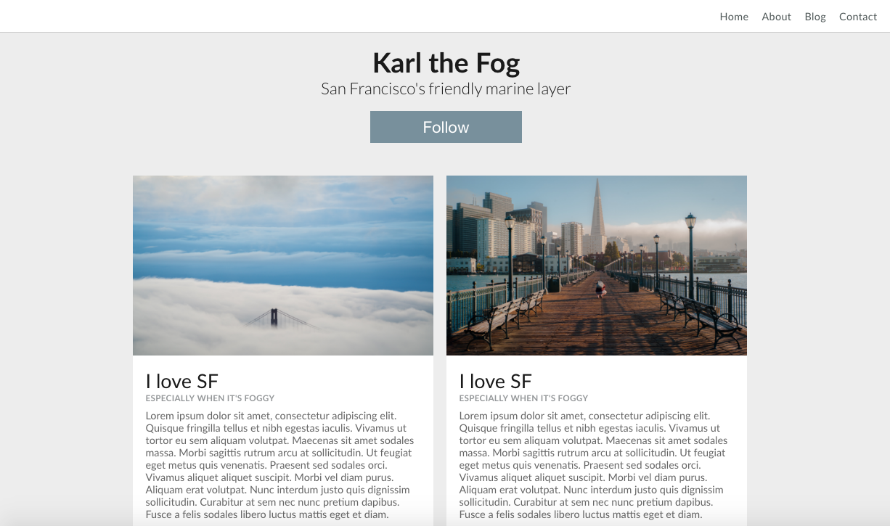
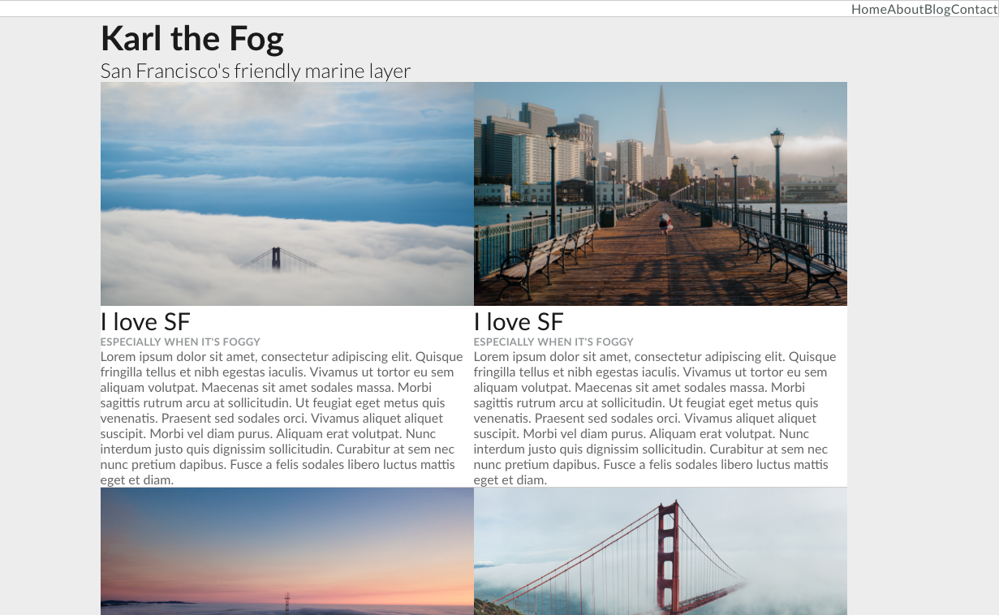
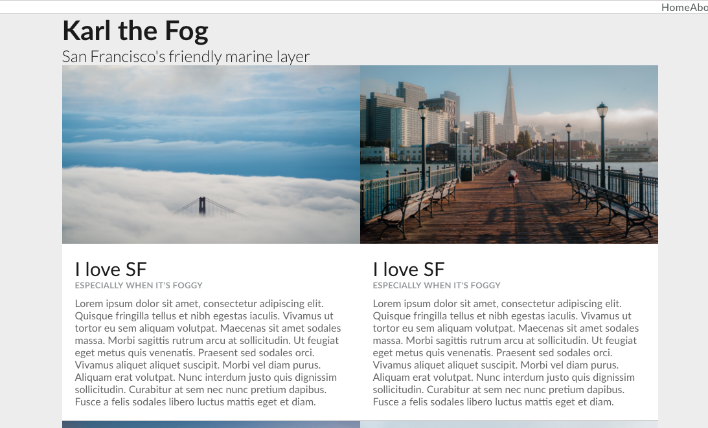
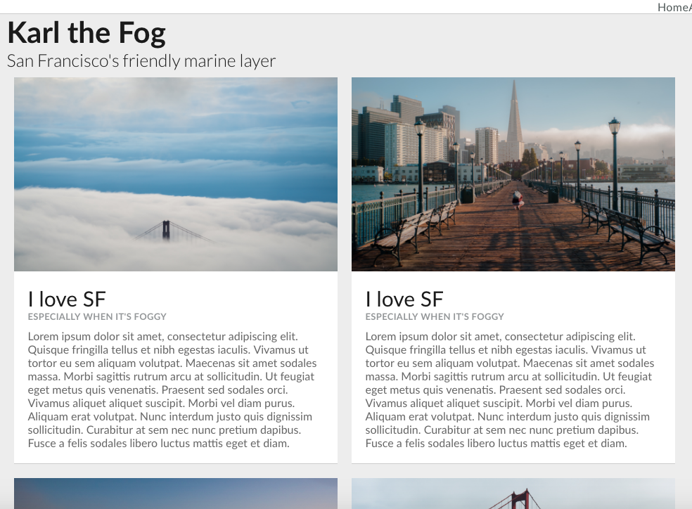
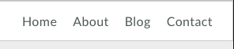

At the end of this hands-on, you should have something like the page below.
Step 1: Adjusting the Blog Text

Open "index.html" from the downloaded folder in your browser to see what we have to work with.
Karl the Fog's blog has some issues with spacing and position now - but don't worry! With a bit of CSS, we can easily make it pretty. From the downloaded folder, open up style.css and index.html!
Tip: Try using Web Inspector to edit your CSS, so you can see immediate results of the properties and values you input. Then, copy this code into your style.css file to make those changes permanent!
Notice that the blog text is very close to the edge of the container. Let's use padding to create more space between the blog text and blog container.
.blog_text_container {padding: 20px;
}
Right now our blog title, subtitle and description are all evenly spaced. Let's use padding-bottom to add more space between the title/subtitle and the description!
.blog_head_container {padding-bottom: 10px;
}
Refresh your page, and you should have something that looks like this:
Step 2: Positioning and Spacing the Blog Posts
Right now our blog posts are placed edge-to-edge. Let's add some breathing room between each blog post by using margin.
.blog_container {margin: 10px;
}
Now, you should have something like this.
Step 3: Fixing the Navigation Bar
Your website looks pretty nice! (I hope). However, the nav bar's text needs some work on spacing. To fix that, use padding and margin to make the nav bar more legible.
To add margin for all nav bar items, apply your CSS styling to #navbar.
#navbar {padding: 15px;
}
Now we need to increase space on the left and right between each item on the nav bar list. To do this, we need to use the CSS selector #navbar-items li and apply margin values.
#navbar-items li {margin: 0px 10px;
}
Great! Your nav bar should look something like this now.
Step 4: Final Touches
Let's add some spacing around the title of our blog. Both the title "Karl the Fog" and subtitle are contained in #title-container. Let's apply some margin values once again, and use text-align to center the title container.
#title-container {margin: 20px 10px;
text-align: center;
}
Lastly, let's add a follow button below our blog title. Add a button in the title-container div on your HTML and apply CSS style properties, including padding to enlargen the button size and margin to add spacing around the button!
padding: 10px 80px;
font-size: 24px;
background-color: #78909C;
border: none;
color: white;
margin: 20px;
cursor: pointer;
}
P.S. For HEX color code inspiration (for CSS properties background-color, color, etc.), check out Google Color!
Awesome! Your website should now look like the image at the top of the page.